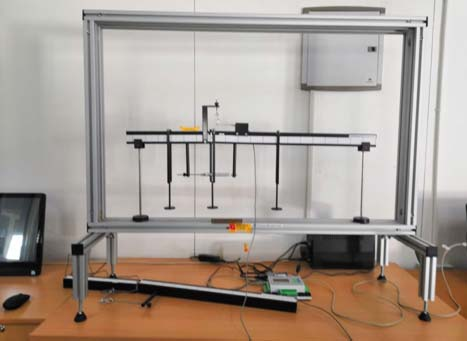
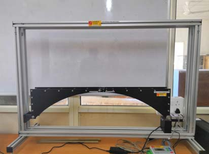
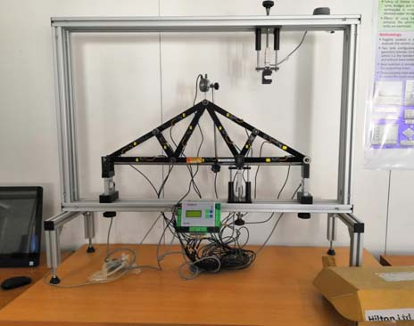
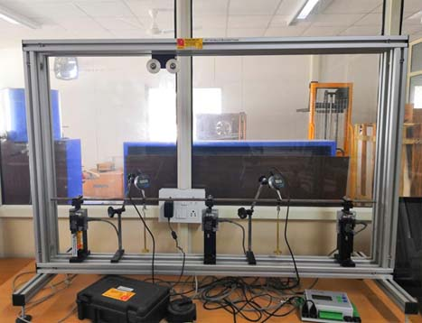
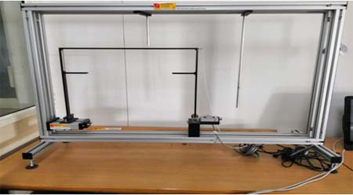

School of Engineering
Advanced Structural Engineering Laboratory
.Lab intended for:
MTech and BTechAcademic programs to be supported:
(i) MTech Structural Engineering (CE556P, CE511), (ii) BTech Civil Engineering (CE301, CE511) and (ii) other future MTechBrief details of lab:
(i) MTech Structural Engineering (CE556P, CE511), (ii) BTech Civil Engineering (CE301, CE511) and (ii) other future MTech programs in Civil Engineering.Coordinator & Co-Coordinator:
Dr Sandip Saha & Dr.Subhamoy SenContact Person:
Amit Sharma, Senior Lab Asst.267178, 9736318448
Ankush kapil, Senior Lab Asst.
267018, 9459510629
List of experiments
i. Stress-strain characterization of self-compacting and high-strength concrete and reinforcing materials.ii. Behavior of RC beams under flexure.
iii. Behavior of RC beams under shear.
iv. Behavior of slabs.
v. Non-Destructive Testing and Damage Detection.
vi. Free and forced vibrations of structure and evaluation of dynamic characteristics.
vii. Dynamic Young’s Modulus, Shear Modulus, and Poisson’s ratio of materials.
viii. Behavior of frame and shear wall building models under horizontal excitation.
ix. Time and frequency-domain study for dynamic response analysis.
List of existing facility in lab
1. Shear Force Apparatus

A length of material supported horizontally and carrying vertical loads is called a beam. The loading causes bending and transverse shearing. The loads and reactions are the 'external' forces acting on the beam. They must be in equilibrium. However, the strength of the beam depends on 'internal' forces. This experiment demonstrates the nature of these internal forces and their dependence on the external system of forces.2. Three Hinged Arch

A model Three Hinged Arch to investigate the horizontal thrust of its springing and calculation of its influence line. Symmetrical and unsymmetrical bridge sections are supplied to vary the experimental range of this experiment. Uniformly distributed loads and tandem rolling loads are supplied.3.Truss Framework

A plane frame is made from fully welded hollow square section steel members making a 45° truss. The truss has special end mountings supplied that allow different end bearing conditions to be used, i.e. pinned and roller end. The end mountings also allow the frame to be inverted for work on an inverted truss. Seven members of the truss are strain gauged with half bridge arrangements4. Cont. and Intermediate Beams

An experimental apparatus to allow students to investigate the properties of statically indeterminate and continuous beams.5.Bench Mounted Frame

The frame facilitates quick and easy attachment of all experiments and is backward compatible with earlier versions of Hi-Tech experiments. A full set of assembly instructions and tools are supplied.<